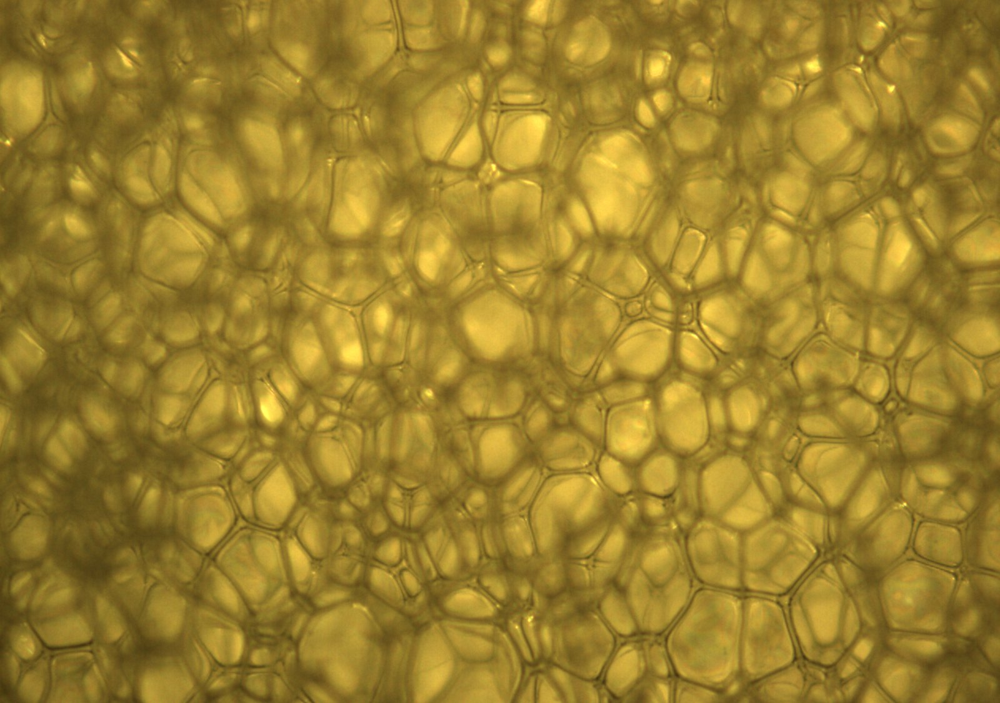
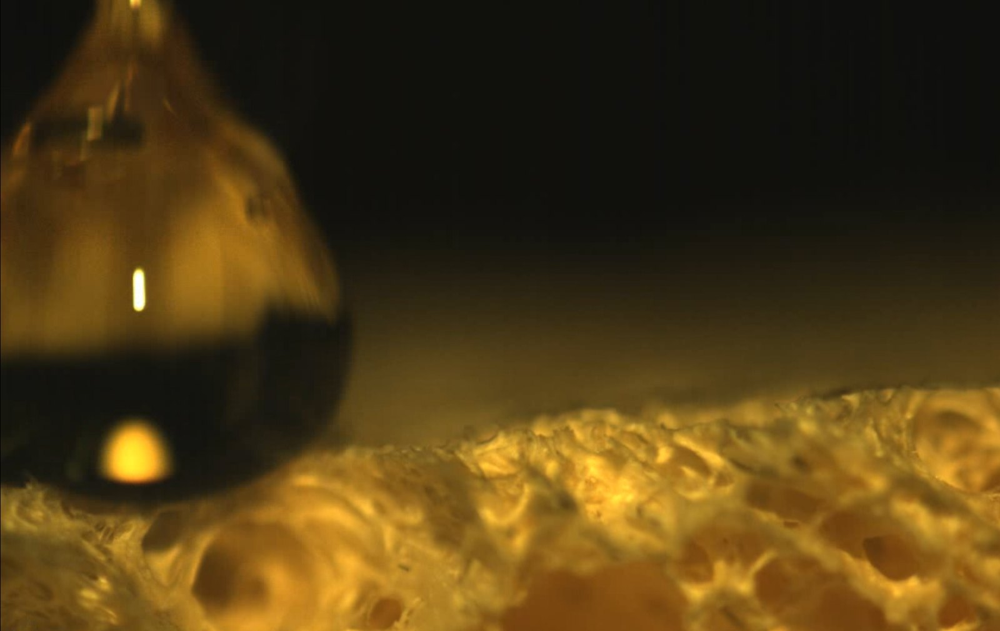
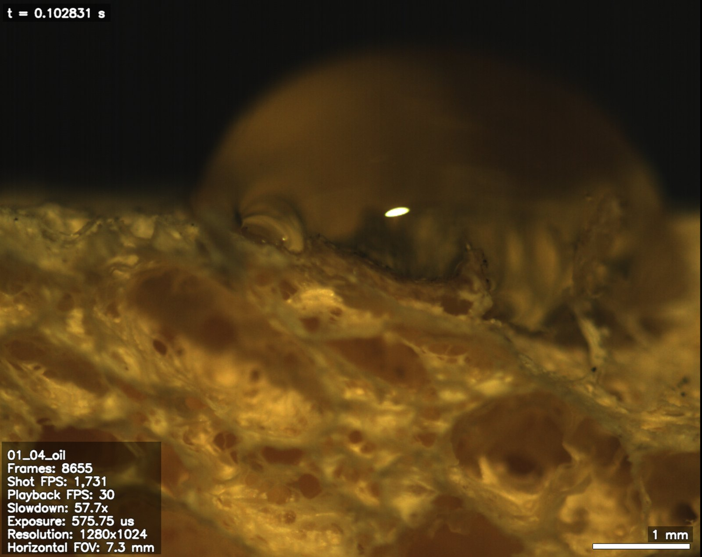

High-speed imaging of oil uptake in OHM sponges
Problem
Oleophilic–hydrophobic multifunctional (OHM) sponges are engineered to pull oil and heavy metals out of water, and their performance is usually reported as a single number: how much a sample takes up, weighed before and after. That measurement says nothing about how uptake happens — how fast the droplet spreads, how the front advances into the pore network, or how those dynamics change with formulation. The interesting physics is in a window of tens of milliseconds, and it is invisible to a scale.

Approach
I image droplet contact and uptake with a high-speed camera through an optical microscope, and pair that with gravimetric bulk adsorption measurements across 25 sponge formulations. The imaging captures contact time, spreading diameter, and the advance of the absorption front; the gravimetric data anchors those dynamics to total capacity.
Scoring video frames by eye is slow and subjective, so the frames are segmented with a trained machine-learning model that extracts the front position automatically, turning a recording into a time series without a person marking boundaries. Pore structure is characterized separately by SEM and TEM, so that measured uptake dynamics can be correlated against the morphology that produces them.


My role
I work on the sponge absorption study within a group project: sample preparation and sectioning, the high-speed imaging setup, gravimetric measurements, and electron microscopy of pore structure. The segmentation and acceleration work is shared across the team.